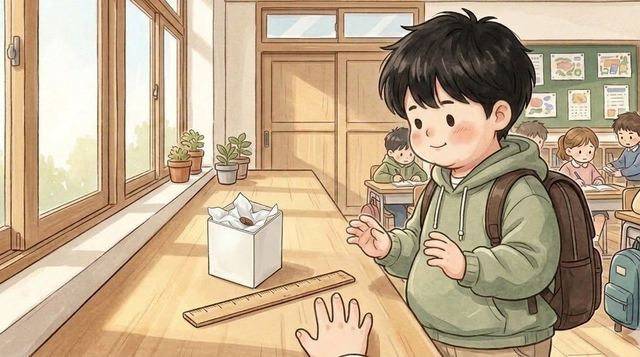
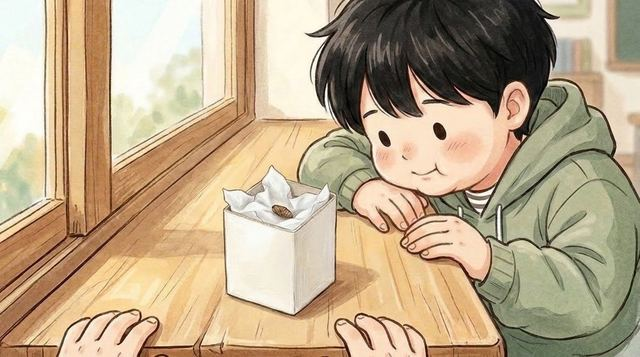
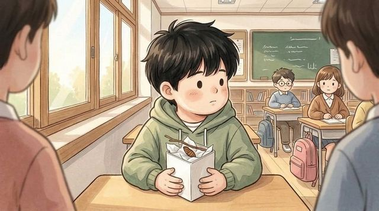
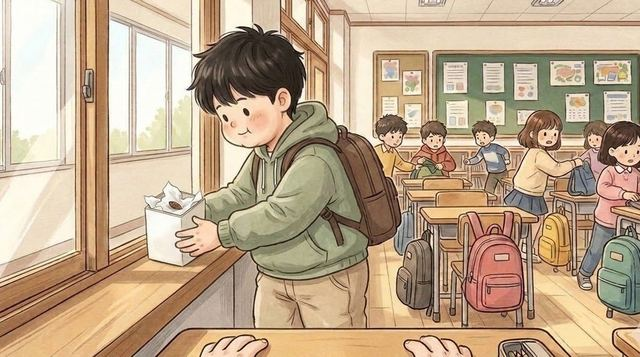
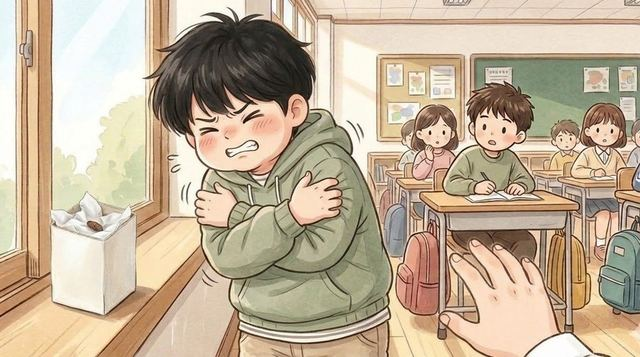
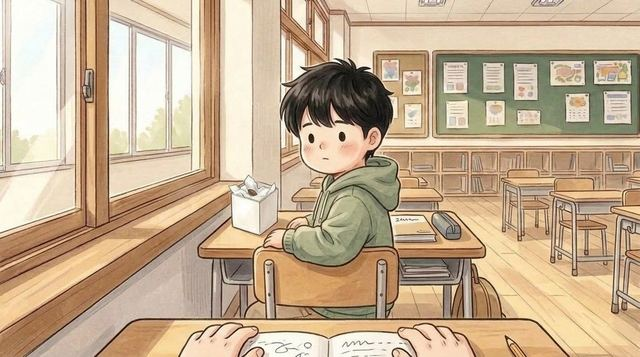
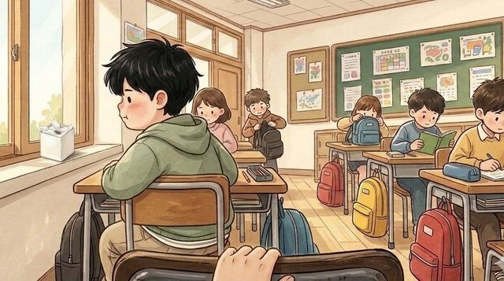
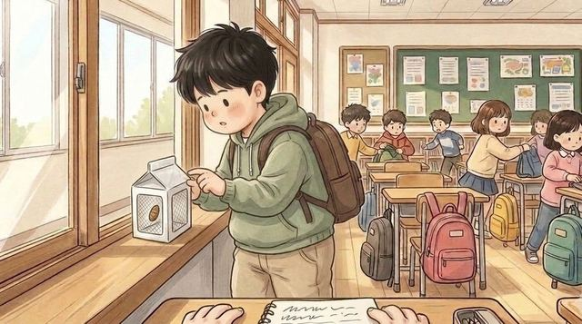
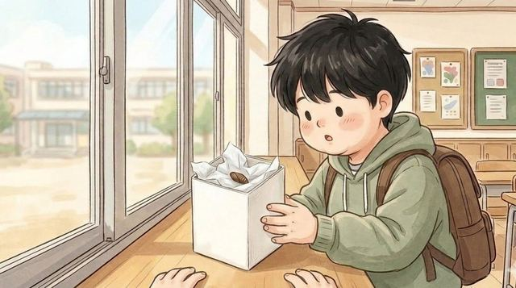

시우 · 만남 1 (2일차) — 30센티 class

maps/class.jpg
나레이션아침. 시우가 창가에 서 있었다. 창틀 위에 우유팩 하나가 놓여 있었다. 윗부분을 잘라 내고 휴지를 깐 우유팩이었다.
주인공(속마음)surprised(첫날 깨진 관찰 통 대신인가 봐.)
주인공(속마음)sad(첫날 아무도 시우한테 괜찮냐고 안 물었지.)

나레이션나는 시우 쪽으로 걸어갔다. 세 걸음쯤 남았을 때 시우가 말했다. 나를 보지 않고, 우유팩을 보면서.
시우sad……가까이 오지 마.
나레이션나는 멈췄다.
주인공(속마음)sad(나 싫은가?)
시우sad……30센티.
maps/class.jpg
🔎 미션: 「자」 보기 (ruler)
나레이션시우가 필통에서 자를 꺼내 창틀에 놓았다. 그리고 손가락으로 자의 끝을 툭 쳤다.
주인공(속마음)surprised(30센티…… 이만큼 떨어져 달라는 거야?)
maps/class.jpg
🔎 미션: 「우유팩」 들여다보기 (milk_carton)

나레이션우유팩 안에 갈색 번데기가 있었다. 첫날 바닥에 떨어졌던 그 번데기였다.
❓ 어떻게 할까?
▶ 선택 A: 자 길이만큼 떨어져 서서 묻는다. 「첫날 일, 괜찮아?」
maps/class.jpg
나레이션나는 자 길이만큼 한 걸음 물러섰다.

주인공smile첫날 일, 괜찮아?
나레이션시우가 한참 대답하지 않았다. 그러다 우유팩을 보며 말했다.
시우sad……번데기는 괜찮아. 나는…… 아직 모르겠어.
주인공smile응.
시우smile……물어본 사람 네가 처음이야.

나레이션종이 울렸다. 시우가 우유팩을 창틀 가장 안쪽으로 밀었다.
시우smile……날개 무늬. 매일 봐야 해.
나레이션혼잣말인지 나한테 한 말인지 알 수 없었다.
나레이션시우가 자를 필통에 넣다가 멈추고 덧붙였다.
시우smile……날개 무늬 비치면 알려 줄게. 호랑나비.
🍚 그날 저녁 (선택 A)

주인공smile엄마, 시우 번데기 살아 있었어! 우유팩에 넣어서 창가에 뒀어. 근데 내가 다가가니까 30센티 안에는 오지 말래.
엄마relieved번데기가 살아 있어서 다행이다. 시우가 30센티는 떨어져 달라고 미리 말해 준 것도 고맙네.
주인공smile자 길이만큼 떨어져서 첫날 일 괜찮냐고 물어봤어. 물어본 사람 내가 처음이래.
엄마smile시우가 말한 만큼 떨어져서 먼저 물어봤구나. 시우도 그게 고마웠을 거야.
▶ 선택 B: 「괜찮아?」 하며 시우 어깨에 손을 올린다.
maps/class.jpg
주인공smile괜찮아?

나레이션내 손이 시우 어깨에 닿는 순간, 시우가 몸을 확 뺐다.
시우angry……만지지 마.
나레이션시우가 두 손으로 자기 팔을 감쌌다. 몸이 앞뒤로 조금 흔들렸다.
주인공surprised아, 미안. 미안! 만져도 되냐고 먼저 물어볼걸.
나레이션나는 얼른 물러났다. 한참 뒤에야 시우의 몸이 멈췄다.
시우sad……30센티.
나레이션종이 울렸다. 시우가 우유팩을 창틀 가장 안쪽으로 밀었다.
시우smile……날개 무늬. 매일 봐야 해.
나레이션혼잣말인지 나한테 한 말인지 알 수 없었다.
🍚 그날 저녁 (선택 B)
주인공smile엄마, 시우 번데기 살아 있었어! 우유팩에 넣어서 창가에 뒀어. 근데 내가 다가가니까 30센티 안에는 오지 말래.
엄마relieved번데기가 살아 있어서 다행이다. 시우가 30센티는 떨어져 달라고 미리 말해 준 것도 고맙네.
주인공sad괜찮냐고 하면서 어깨에 손 올렸는데, 시우가 몸을 확 뺐어. 나 잘못한 거야?
엄마smile몰랐으니까 괜찮아. 다음엔 30센티를 지키고, 손대기 전에 먼저 물어보자.
▶ 선택 C: 「알았어, 미안.」 하고 그냥 자리로 돌아간다.
maps/class.jpg
주인공sad알았어. 미안.

나레이션나는 내 자리로 돌아갔다.
주인공(속마음)sad(나랑 얘기하기 싫은가 봐.)

나레이션자리에 앉아 돌아보니, 시우가 나를 보고 있었다. 내가 돌아보자 시우는 얼른 창밖으로 고개를 돌렸다.
주인공(속마음)surprised(……싫은 거 아니었나?)
나레이션종이 울렸다. 시우가 우유팩을 창틀 가장 안쪽으로 밀었다.
시우smile……날개 무늬. 매일 봐야 해.
나레이션혼잣말인지 나한테 한 말인지 알 수 없었다.
🍚 그날 저녁 (선택 C)
주인공smile엄마, 시우 번데기 살아 있었어! 우유팩에 넣어서 창가에 뒀어. 근데 내가 다가가니까 30센티 안에는 오지 말래.
엄마relieved번데기가 살아 있어서 다행이다. 시우가 30센티는 떨어져 달라고 미리 말해 준 것도 고맙네.
주인공sad가까이 오지 말래서 그냥 갔어. 근데 나중에 시우가 나를 보고 있었어.
엄마smile너를 싫어하는 게 아니라 30센티만 떨어져 달라는 말이었을 거야. 다음엔 그만큼 떨어져서 말을 걸어 보자.
▶ 선택 D: 그 자리에서 번데기에 대해 묻는다. 「그거 언제 나비 돼?」
maps/class.jpg
나레이션나는 그 자리에 멈춰 선 채로 물었다.

주인공surprised그거 언제 나비 돼?

나레이션시우 손이 우유팩 가장자리를 톡톡 두드렸다.
시우smile호랑나비. 날짜는 몰라. 번데기가 알려 줘.
주인공surprised번데기가? 어떻게?
시우smile색이 변해. 날개 무늬가 비쳐 보이면 이틀 남은 거야.
나레이션시우는 한 번도 나를 보지 않았다. 그런데 계속 말했다.
나레이션종이 울렸다. 시우가 우유팩을 창틀 가장 안쪽으로 밀었다.
시우smile……날개 무늬. 매일 봐야 해.
나레이션혼잣말인지 나한테 한 말인지 알 수 없었다.
🍚 그날 저녁 (선택 D)
주인공smile엄마, 시우 번데기 살아 있었어! 우유팩에 넣어서 창가에 뒀어. 근데 내가 다가가니까 30센티 안에는 오지 말래.
엄마relieved번데기가 살아 있어서 다행이다. 시우가 30센티는 떨어져 달라고 미리 말해 준 것도 고맙네.
주인공laugh번데기 언제 나비 되냐고 물었더니 시우가 알려 줬어. 호랑나비래! 시우 엄청 많이 알아.
엄마smile좋아하는 걸 물어봐 주니까 시우도 신나서 알려 줬나 보다.